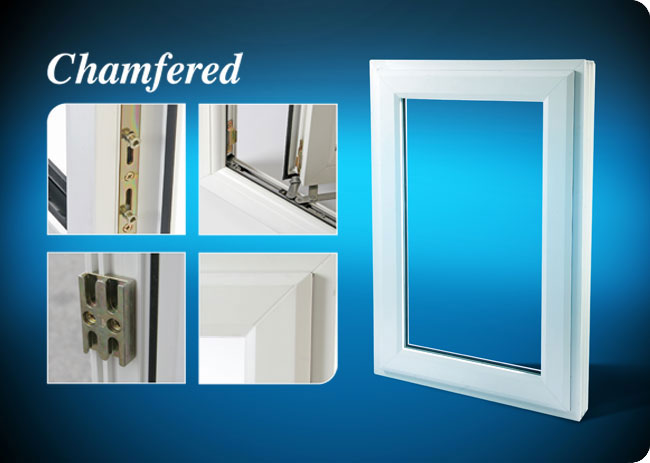

Chamfered Windows
Choosing the right windows for your home can be a tough decision to make. You need to consider style, comfort, security, performance and durability and of course affordability. You also want a product that will enhance the appearance and value of your property for years to come. You'll also be looking for the peace of mind that comes with buying products of a reputable company. Wholesale Windows currently use Kommerling Gold profile which is recognised as Europe's leading producer of PVC-U window and door systems, Kommerling understands what UK homeowners require in terms of product quality, style and reliability. The Connoisseur GOLD system, with its revolutionary "ovolo" profile has been designed to complement the more traditional-looking home offering a unique combination of classic appearance and state-of-the-art performance.
 |
Steel Reinforced Frames -The GOLD system's slim profiles are engineered to accommodate steel reinforcing for maximum strength, security and durability.
Multi-Point Locking -The GOLD system has been designed to accommodate the latest in security features, this includes multi-point locks and shoot-bolt options to make each window as intruder-proof as possible.
Home Comfort Frames-Comfort and style are enhanced by superb engineering design. This provides excellent insulations and "easy clean", low maintenance surfaces.
Internal Beading-Frame sections for windows and door frames may be specified as internally beaded for improved security.
Colourfast PVC-U-KOMMERLING GOLD frames require minimal maintenance to keep your new windows in top condition. Long-term test reports are available to show that frames with over twenty years service in the harshest environments have been laboratory inspected to be as good as new. |
||
The Definitive Collection is available in either Chamfered as shown or Sculptured casements, it includes many features and benefits. We also offer a number of optional extras such as high security locks, keeps and structural bay posts as well as hinge protectors to make your windows simply unbeatable. See our gallery for more window images |
|||
Copyright © Wholesale Windows | All Rights Reserved
Site by redsky-creative